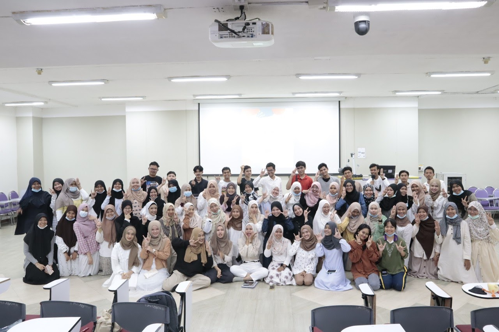

1.เปิดโลกกิจกรรม

เป็นกิจกรรมแรกที่ทางชมรมนิสิตมุสลิมมหาวิทยาลัยพะเยาทำขึ้นประจำทุกปี เพื่อให้นิสิตมุสลิมหรือนิสิตต่างศาสนิกที่สนใจในชมรมได้ทำการสมัครเข้าเป็นสมาชิกของชมรม
ในกิจกรรมได้นำเอาเครื่องแต่งกายเพื่อให้ต่างศาสนิกได้ลองสวมใส่ และอธิบายถึงหลักการของศาสนาในรูปแบบต่างๆ
2.OpenHouse MuslimUP
